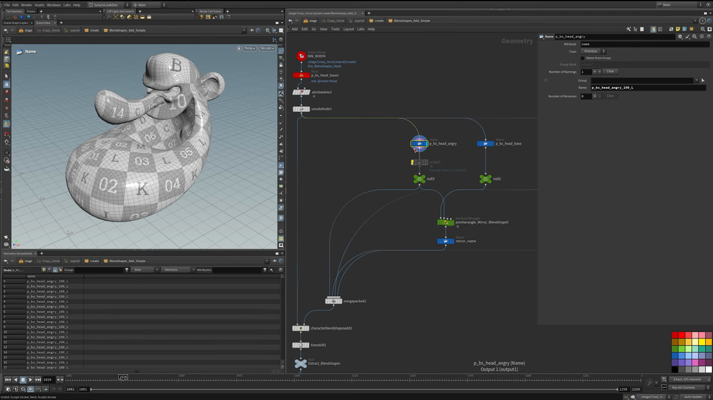
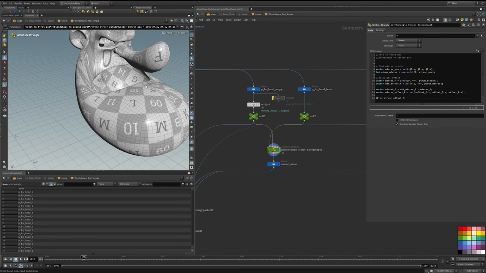
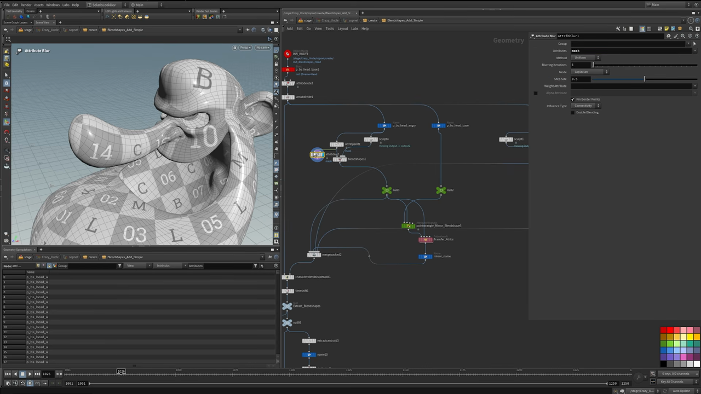
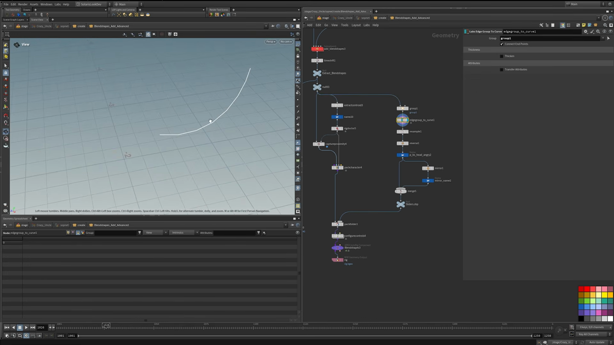

Houdini キャラクター制作 4 — 片側だけ彫れば済むプロシージャルなブレンドシェイプ
出典: Character Creation 4 | Blendshapes （SideFX 公式チュートリアル Create a Procedural Character の第4回 / 講師 Roy Kristoffersen さん / Houdini 21 / 18:46 / 英語）。 このページは、上記の動画を見ながら自分用にまとめた日本語の学習メモです。SideFX 公式の翻訳ではありません。 シリーズ全体は第0回にまとめています。
この回で扱うこと
冒頭で「ブレンドシェイプは Houdini コミュニティであまり話題にならない」と言われていました。 確かに資料が少ない領域だと思います。この回では Simple と Advanced の2つのセットアップを見ていきます。
- 片側だけ彫れば反対側が自動でできるミラーの仕組み
- マスクでブレンドシェイプの効く範囲を限定する
- APEX の簡易リグを作ってブレンドシェイプを確認する
- 顔のジオメトリから作るスライダー
1. 名前がすべて

この回でいちばん強調されていたのが命名です。 「名前が無いとシステム全体がめちゃくちゃになる（create havoc in your system）」とはっきり言われていました。
実際の名前はこうなっていました。
p_bs_head_angry_100_L| 部分 | 意味 |
|---|---|
p_bs | ブレンドシェイプであることを示す接頭辞 |
head | 対象のパーツ |
angry | 表情の名前 |
100 | ウェイト100% |
L | 左側 |
この name アトリビュートを Name ノードで付けます。
Merge Packed と Character Blend Shapes Add がこの名前を読みに行くので、
ここが決まっていないと後段が成立しません。
下ごしらえ
Object Mergeで頭を読み込みますBlastで頭以外を消し、Attribute Deleteで掃除しますUnsubdivideでポリゴンを減らします。 スカルプトしやすくするためで、デモ用の措置とのことでした- ベースとなる頭（
p_bs_head_base）と、彫る側の名前を付けます
2. 片側だけ彫れば反対側ができる
Sculpt ノードで表情を彫ります。動画では怒った顔を作っていました。
彫るのは片側だけで、反対側は Attribute Wrangle が自動で作ってくれます。

その Wrangle（ノード名は pointwrangle_Mirror_Blendshape）の中身が画面に出ていたので書き起こします。
Run Over は Points です。
//rest in first pos
//blendshape in second pos
//find mirror points
vector mirror_pos = set(-@P.x, @P.y, @P.z);
int ptnum_mirror = nearpoint(0, mirror_pos);
//calculate offset
vector mirror_P = point(0, "P", ptnum_mirror);
vector def_mirror_P = point(1, "P", ptnum_mirror);
vector offset_P = def_mirror_P - mirror_P;
vector mirror_offset_P = set(-offset_P.x, offset_P.y, offset_P.z);
@P += mirror_offset_P;やっていることは素直です。
- 入力0 が rest（元の形）、入力1 がブレンドシェイプ（彫ったあと）です
- 自分の X を反転した位置にいちばん近い点を
nearpointで探します - その点における「彫ったあと − 元の形」のオフセットを求めます
- オフセットの X だけ反転して、自分の位置に足します
これで左を彫れば右が自動で対称に彫られます。
名前の引き継ぎと、ひとつの落とし穴
ミラーしたあと Attribute Transfer（ネットワーク上の名前は Transfer_Attribs）で
name とブレンドシェイプのチャンネル名を引き継ぎ、Name ノードで
_L を _R に付け替えます。
ここに落とし穴があります。Merge Packedは、せっかく転送した名前を尊重してくれません。 ブレンドシェイプ名としてノード名のほうが使われてしまいます。 講師の方も「残念ながら手作業が必要」と言っていて、Merge Packedに入る各ノードの名前を手で付け替えていました。
動画ではこの挙動を実際に見せたうえで、ノード名を L / R に直していました。
ここだけはプロシージャルになりません。
3. マスクで効く範囲を限定する

スカルプトすると、意図しないところ（動画では目のまわり）まで引っぱられてしまいます。
これを Blend Shapes ノードのマスクで解決します。
Blend Shapesノードの設定を Set from Attribute にし、 マスクを first input から取るようにしますAttribute Paintで、ブレンドシェイプを効かせたい範囲にmaskを塗りますAttribute Blurでマスクをならします。 上の画像では Attributes がmask、Mode が Laplacian、 Blurring Iterations 1、Step Size 0.5、Influence Type が Connectivity でしたBlend Shapesノードでそのマスクを指定します
動画ではマスクの有無を切り替えて比較していて、 マスクありだと塗った範囲だけが動き、それ以外は元の形が保たれます。 「スカルプトの初期のミスがそのまま出ていた部分も、マスクで抑えられる」という説明でした。
4. 確認用の簡易 APEX リグ
ブレンドシェイプができたら、実際に動かして確認します。そのための最小構成のリグです。
Extract Centroid → Name (root) → Rig Doctor → Capture Proximity
→ Pack Character → Configure Controls → Blend ShapesExtract Centroidで点を1つ取り出します。Run Over は Detail にして、 ポリゴン全体でひとつの点にしますNameでその点にrootと名前を付けます。これがスケルトンになりますRig Doctorを通しますCapture Proximityで頭をそのジョイントにキャプチャしますPack Characterでまとめます
Pack Character はジオメトリに bone capture のウェイトが付いていること、
そしてスケルトンがあることを要求します。
そのため、たとえブレンドシェイプの確認だけが目的でも、
上の手順で最低限のリグを作っておく必要があります。
これが無いと APEX のリグにブレンドシェイプを載せられません。
あとは Configure Controls を通して Blend Shapes ノードで確認できます。
実行すると Houdini が少し考えたあと、ブレンドシェイプが効いた状態になります。
5. Advanced — 軽量化
もう一つの「Blend Shapes Add Advanced」は、パフォーマンス向上のためのセットアップです。
- 左右と rest を用意し、
Point Symmetryを作ります Attribute Deleteで不要なものを落とし、ブレンドシェイプのジオメトリだけを残します- ブレンドシェイプの名前を付けます
- 頭を分けて ID を転送します
Connectivityで各ブレンドシェイプに ID を振り、ミラーとアトリビュートのコピーを行います- ベースとの差がない部分を大量に削除します
ブレンドシェイプは「元の形との差分」なので、 差が出ていない頂点は持っている必要がありません。 それを削ることでブレンドシェイプが軽くなり、リグの動作が軽くなります。
講師の方は「劇的にパフォーマンスが上がるわけではないが、 ブレンドシェイプの数が多い場合はかなり効いてくる」と言っていました。 追加はカスタム HDA 経由で行われています。
6. 顔のジオメトリから作るスライダー

最後はブレンドシェイプを操作するスライダーです。 これも顔のジオメトリから作られています。
Group Createでエッジのグループを作りますLabs Edge Group To Curveでジオメトリから直接カーブを抽出しますResampleで解像度を上げますReverseで向きを反転します。 ブレンドシェイプにドラッグしたときの動く向きを合わせるためですNameで名前を付けます。 この名前は、操作したいブレンドシェイプの名前と一致している必要がありますMirrorして反対側の名前に付け替えます- pack のフォルダに
slidersと shape として名前を追加します
カーブをジオメトリから抽出しているので、 顔の形を直すとスライダーの位置も一緒に動きます。 コントローラーが常に顔に貼り付いている状態になります。
この回のまとめ
- 命名がすべての土台です。
p_bs_head_angry_100_Lのように、部位・表情・ウェイト・左右を含めます - 片側を
Sculptで彫れば、Attribute Wrangleのミラー処理で反対側ができます Merge Packedは転送した名前を無視してノード名を使います。ここだけ手作業が必要ですAttribute Paint+Attribute Blurのマスクで、ブレンドシェイプの効く範囲を限定できますPack Characterはスケルトンと bone capture を要求するので、確認用でも最小限のリグが要ります- Advanced では、ベースと差がない頂点を削ってブレンドシェイプを軽くします
- スライダーは
Labs Edge Group To Curveで顔から抽出したカーブで作れます。名前はブレンドシェイプ名と一致させます
次の第5回は Hair and Groom Workflow です。